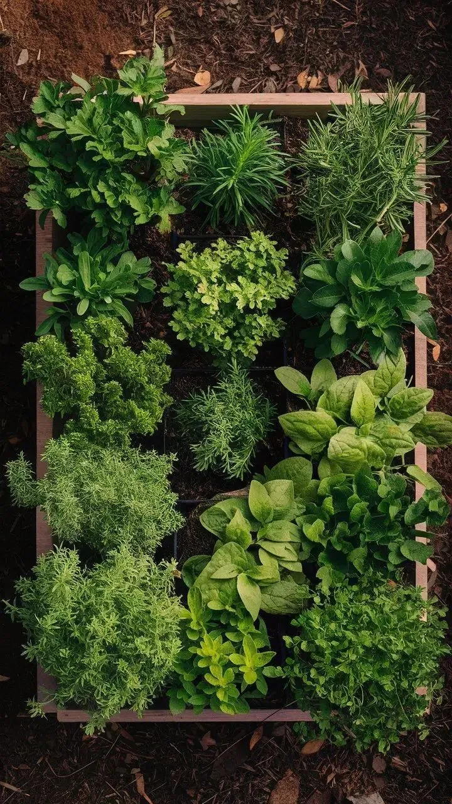

הכנה, בחירת צמחים, השקיה וטיפול. כל מה שצריך לפני שמתחילים

גינת תבלינים במרפסת היא אחד הדברים הכי מתגמלים שאפשר לעשות עם מרפסת קטנה. עשבי תיבול טריים במטבח, ריח טוב בבוקר, ומראה ירוק שחי לאורך כל השנה. בלי לדרוש יותר מדי ממכם. אבל יש כמה דברים שחייבים לבדוק לפני שמזמינים שתילים.
מרפסת תלויה תקינה מסוגלת לשאת עומס שימושי של כ-300 ק"ג למ"ר, מספיק לכמה עציצים גדולים. אבל בתוספות ישנות (20 שנה ומעלה) כדאי להיות זהירים יותר ולא להגיע לגבול. כלל אצבע פשוט: עדיפים עציצים קלים עם תערובת גידול קלה, פזורים על פני כמה מקומות, לא מרוכזים בקצה אחד.
שימו לב: עציץ בינוני עם אדמה רגילה לחה שוקל 170–220 ק"ג למ"ר. תערובת גידול קלה לצמחי מרפסת שוקלת הרבה פחות, 110–130 ק"ג למ"ר. כלומר: הבחירה בחומר הגידול משפיעה ישירות על הביטחון.
זה הפרמטר הכי חשוב לבחירת הצמחים. מרפסת דרומית מקבלת שמש מלאה רוב היום. מרפסת מערבית, שמש אחר הצהריים. מרפסת צפונית מקבלת אור מפוזר בלבד ולא שמש ישירה. ברוב צמחי התיבול, ובעיקר בצמחים ים-תיכוניים כמו אזוב, רוזמרין ולבנדר, השמש הישירה היא תנאי בסיסי. במרפסת צפונית: תצטמצמו לצמחים שמסתדרים בצל חלקי, כמו נענע ומליסה.
עציץ ללא ניקוז תקין = שורשים רקובים. תוודאו שלכל עציץ יש חורי ניקוז פתוחים, ושהמים עוברים החוצה בחופשיות. אם קיים מאסף מים בתחתית, רוקנו אותו כל השקיה.
מרפסת גבוהה חשופה לרוחות חזקות. זה מייבש את הצמחים מהר מאוד ועלול להפיל עציצים. בחרו מיקום מוגן יחסית, קרוב לקיר. אם יש נקודת מים זמינה, מומלץ מאוד להתקין מערכת טפטוף אוטומטית שחוסכת לכם זמן ומונעת פגיעה בצמחים בשעות חום.
אלה הצמחים שגדלו מאז ומעולם בתנאי חום, יובש ועקה. הם צריכים מינימום מים ומינימום תשומת לב, ומסתדרים מצוין במרפסות חמות וחשופות לשמש:
אלה צמחים שצריכים יותר השקיה ולעיתים גם קצת צל בשעות השיא של הקיץ:
צמחי ים-תיכוניים, אזוב, לבנדר, רוזמרין, טימין, מגיבים רע לעודף מים. הם ינוונו ויירקבו לפני שימותו מצמא. כלל הפוכה מהאינטואיציה: אם לא בטוחים, השקו פחות, לא יותר.
לעומתם, נענע ומליסה דורשות השקיה מרובה וסדירה. לא שתפו אותן עם הים-תיכוניים בעציץ אחד, צרכי המים שלהם הפוכים.
כלל בסיסי: לפני שמשקים, הכניסו אצבע לעומק 2–3 ס"מ לתוך האדמה. אם לחה, אל תשקו. אם יבשה לגמרי, כן. עדיפה השקיה עמוקה ומרוכזת פעם בכמה ימים על פני ריסוס קטן כל יום.
צמחי ים-תיכוניים דורשים גיזום פעמיים בשנה, באביב ובסתיו, כדי למנוע הצטמקות ועיצוי מחדש. חשוב: לא לגזום עד הגבעול הקשה. אצל רוזמרין למשל, גיזום קרוב מדי לבסיס יכול להרוג את הצמח. גזמו רק בחלק הירוק-רך.
הריחן הוא מקרה מיוחד. קיטמו אותו בראש כל הזמן כדי למנוע פריחה ולעודד עלים חדשים. ברגע שמריחן יפריח, העלים מאבדים מהטעם.
אם אתם מתחילים מאפס, הרכב הזה מכסה טעמים, ניחוחות ורמות קושי שונות:
הזמן הטוב ביותר הוא תחילת אביב (מרץ–אפריל) או תחילת סתיו (ספטמבר–אוקטובר), כשהטמפרטורות מתונות. בקיץ אפשר, אבל תצטרכו לצלל ולהשקות יותר. בחורף, הצמחים לא יתפתחו כמו שצריך ויתחילו להיאבק תיכף בקור.
רווחים בין שתילים: לצמחים שנתיים (ריחן, פטרוזיליה), 15–20 ס"מ. לצמחים רב-שנתיים (רוזמרין, לבנדר, אזוב), 40–50 ס"מ לפחות.
נגיע לביקור, נבדוק את המרפסת ונתכנן גינה שתמשיך לתת תוצאות שנה אחרי שנה